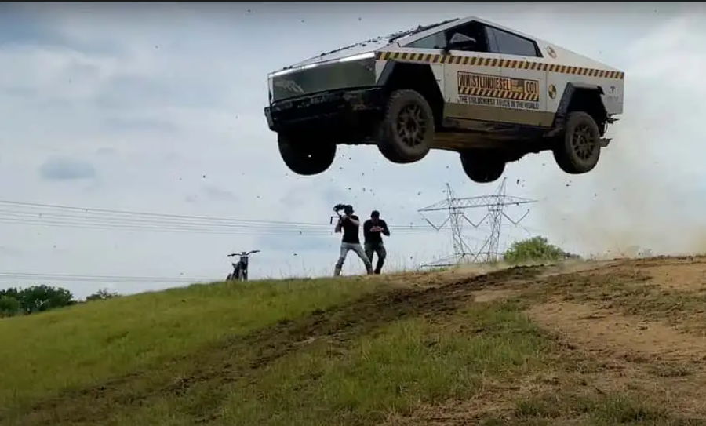
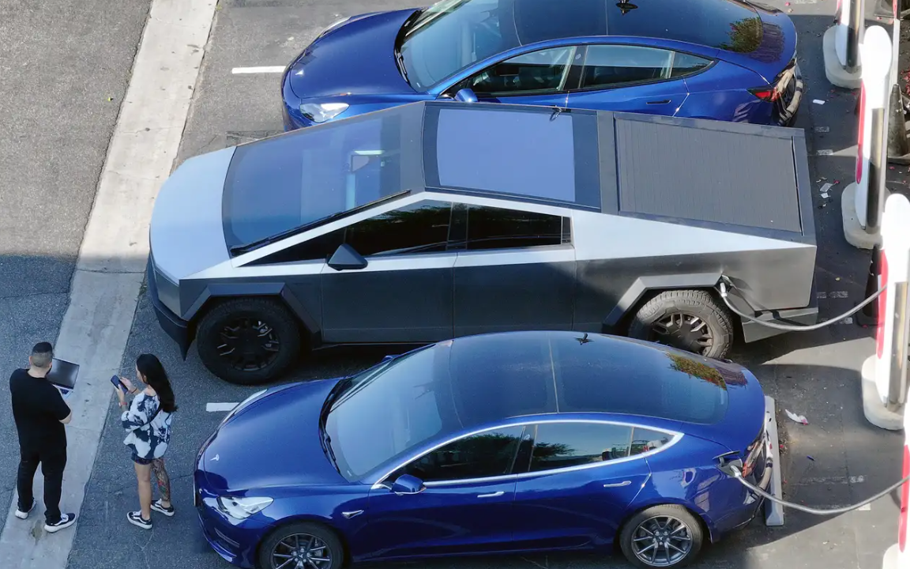
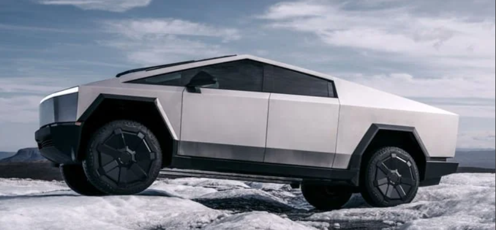

The show out for the very anticipated ‘Cyber Truck’ was received with very mixed reviews. Although it was liked by those that waited 4 long years ago, it was announced and promised. Those that endured the multiple setbacks were excited to finally be able to take their Futuristic truck home. To even enjoy the very amazing features that were promised in the announcement as well, anyone would be excited especially after putting down the minimum amount of about $82,000.
Those that own the truck say they have nothing but positive things to say, outsiders looking in see that it's poorly designed, and executed see that it is nothing but an oversized paperweight. Many reports from multiple sources had shown the truck having issue after issue of problems from its poor build quality resulting in a recall due to the design of the gas pedal becoming stuck down to the floor causing unwanted acceleration that cannot be stopped, to multiple other safety concerns regarding the frunks inability to sense the human finger having those that own the truck to do their own “testing” with it having them stuck with their fingers crushed.
Its oversized build makes it a big hassle for finding parking or just trying to not hit anything with the huge blindspots it has. With the stainless steel body turning heads when being driven, it does so for all the wrong reasons.
We have not seen such a design choice since the Famous and Infamous Delorian. The reason for such disgust from trucks has to be the naked stainless steel body as there is no real protection against the elements of the world. This results as it becomes easily susceptible to surface rust from any bit of rain or just water in general. Not to mention that the human hand has many natural oils that can also stain on the trunk. The only true way to keep the truck in its factory condition would have to be either using a protective film which could cost you an extra +$1,000 more, or you can be reasonable and just spot clean your truck every night for the rest of your life.
Elon Musk is responsible for all aspects of the CyberTruck from design down to the price. Although highly regarded back in the day, Elon’s personal image has taken a toll on multiple issues with his personal life as well as other businesses. If there were all the time in the world to list all his issues, and if we did not even dive into his political affairs, we would still be stuck in this article for hours.
For now the real question is, should you buy this car, the honest opinion is to save your money with this huge purchase, at least until all the major issues are fixed. Or if an electric truck is what you truly want, may I suggest the Ford F-150 Lighting. All in all having patience should be your main priority as one does not truly know when all the issues of these first badges of CyberTrucks may be fixed.